【サカつくTV #12】Ver2.4アップデートまとめ｜選抜登録・アクセサリー改善・WPS・新サカつくモード
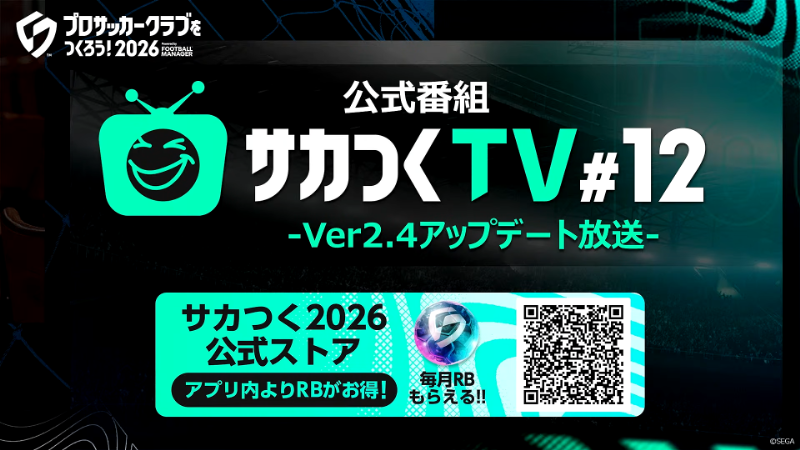
2026年10月26日（月）配信の公式番組「サカつくTV #12」では、10月28日（水）予定のVer2.4アップデート、11月2日（月）のWPS調整、新ガチャ、公式大会、12月予定のVer3.0について発表されました。本記事ではスライドと発言を照合し、「直近で追加される機能」「開催予定のイベント」「開発中の新モード」を分けて整理します。
本記事は公式番組内の発表内容と公開スライドをもとに作成しています。アップデート後の細かな仕様や数値は、ゲーム内お知らせ・監督ノート・今後公開される公式情報もあわせてご確認ください。
- 10月28日・Ver2.4：育成したサカつくモード選手を選抜登録できるようになり、編成の選択肢が拡大。
- 覚醒・アクセサリー：シーズン末の覚醒一括処理、覚醒練習の事前設定、おすすめ装着、効果での絞り込みなどを改善。
- 11月2日・WPS：シーズン10からマッチングとレーティング計算式を調整。Ver2.4当日とは実施日が異なる。
- 新スカウト：クリスティアーノ・ロナウドら4選手のポルトガルプレミアムSPスカウトと、11月4日開始予定の特練カードガチャ。
- 12月6日・公式大会：「第2回 最強監督決定戦 in JAPAN」をセガ本社で開催。予選突破者にはオリジナル選手のエディット権利など。
- Ver3.0・新サカつくモード：アジアのリーグで3年間のクラブ運営。SP選手は開始時に5名、ブーストで最大6名。
- そのほか：ピザーラカップ、ダイスイベント改善、新アシスタント「Neontetraセイカ」、公式ストアのRB500企画などを発表。
目次を開く・閉じる
まず確認｜Ver2.4・WPS・大会・Ver3.0のスケジュール
今回の番組は発表された施策によって開始日が異なります。特にWPSの変更はVer2.4アップデートの10月28日ではなく、11月2日予定です。
関連スライドを開く（2枚）

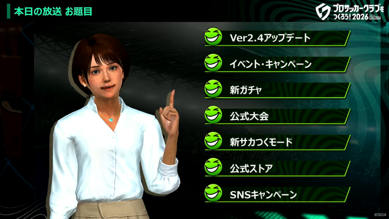

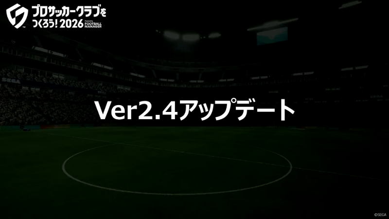
Ver2.4アップデート｜10月28日に追加・改善される機能
▶ 13:26から動画を見る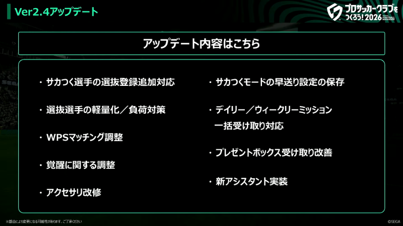
Ver2.4は新しい大型対戦コンテンツの追加というより、サカつくモードで育成した選手を生かすことと、日々の操作で感じる手間を減らすことに重点を置いたアップデートです。
① サカつくモード選手が選抜登録可能に｜フォメコンの自由度が上昇
▶ 15:49から動画を見る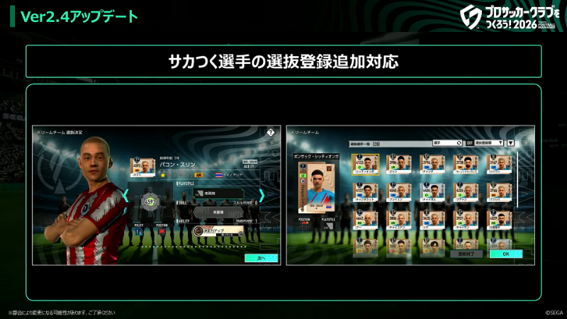
これまで選抜選手として登録できなかったサカつくモードの育成選手を、Ver2.4から選抜に組み込めるようになります。ドリームチームモードでも利用しやすくなり、SP選手だけでは不足していたポジションやプレースタイルの穴を埋める選択肢が増えます。
番組では、特定のフォーメーションコンボを成立させるハードルを下げることに加え、自分の好きな選手を重点育成して理想の11人を編成する遊び方を目指した変更だと説明されました。
「条件に合うSP選手が手持ちにいない」という場面で、育成したサカつくモード選手を使えることが大きな変化です。ただし、選抜登録後の細かな制限・性能の扱いは実装後の仕様確認が必要です。
選抜対象が増えることを受け、選抜選手一覧の動作も約1.5倍の軽量化を目指して調整したと説明されています。これは「登録できる選手が増えると画面が重くなるのでは」という懸念への対策です。
関連スライドを開く（1枚）

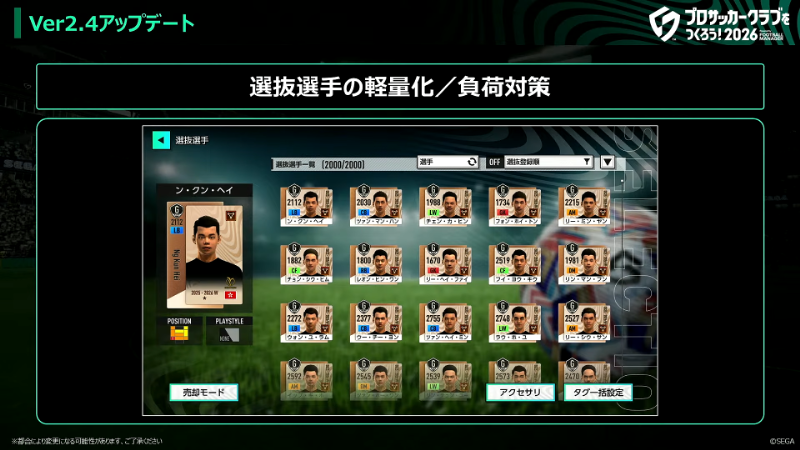
② 覚醒をシーズン末にまとめて実行・事前設定にも対応
▶ 20:37から動画を見る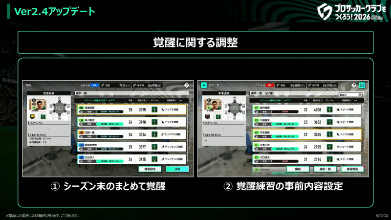
覚醒に関しては2つの改善が発表されました。
従来はシーズン最終盤で覚醒ポイントがたまっても新シーズン開始後まで覚醒が持ち越され、育成のピークが1か月ずれる場合がありました。今回の変更はその取りこぼしを減らす狙いがあります。
③ アクセサリー改善｜おすすめ装着・効果フィルター・詳細切り替え
▶ 22:07から動画を見るユーザーから要望が多かったアクセサリー周りは、特に以下の3点を修正。
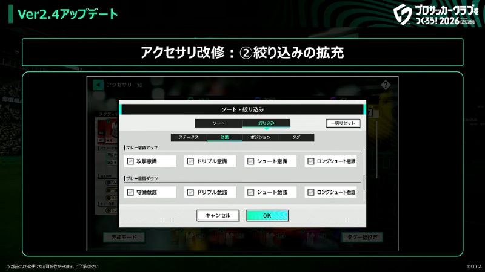
「効果」タブから、決定力アップ、シュート意識アップなどを条件に検索できるようになります。プレイ意識を重視したアクセサリーの厳選や、特定の能力だけを強化したい選手の装備選択がやりやすくなります。
「おすすめ装着」は装備しないまま放置することを防ぐための簡便な機能で、セット効果や追加効果を厳選して最適化する操作とは異なります。ドロップしたアクセサリーの詳細確認も、矢印操作で連続して切り替えられるようになります。
関連スライドを開く（3枚）


放送ではアクセサリーの「ロック」への要望も把握していると説明されましたが、今回のVer2.4実装とは発表されていません。
④ 早送り設定と報酬受け取りを改善
▶ 26:23から動画を見る| 早送り設定 | シーズン開始時などに初期状態へ戻さず、最後に使用した日程進行の早送り設定を保存。 |
|---|---|
| デイリー／ウィークリー | ミッションの累積報酬までワンタップで一括受け取りできるように調整。 |
| 各種パス報酬 | プレゼントボックスを経由せず、直接受け取れるように改善。 |
操作回数が減る比較的小規模な変更ですが、毎日繰り返す作業の時短に直結します。
関連スライドを開く（3枚）


⑤ 新アシスタント「Neontetraセイカ」実装
▶ 28:36から動画を見る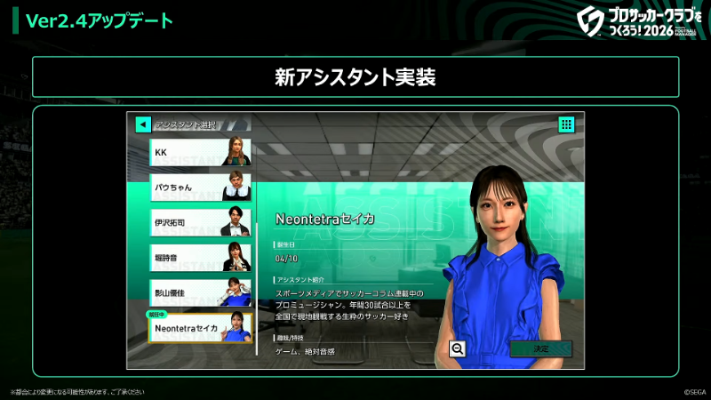
番組MCとしてもおなじみのNeontetra セイカさんが新アシスタントとしてゲーム内に登場。専用ドラマではNeontetraのメンバーも登場する予定で、サカつく2026向けの書き下ろし楽曲も使用されます。
詳しいドラマ内容は実装後のお楽しみとされているため、ストーリーの展開までは本記事で断定しません。
WPSシーズン10｜マッチング・レーティング変更は11月2日から
▶ 19:01から動画を見る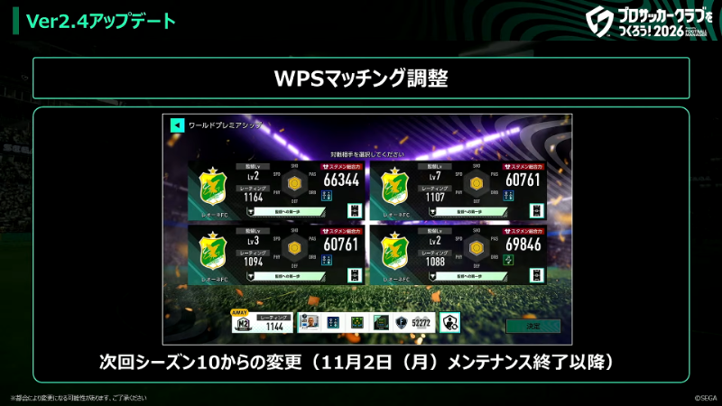
WPS変更は10月28日（水）のVer2.4と同日ではありません。番組では11月2日（月）のメンテナンス終了後から変更予定と説明されました。
- シーズン9の終了：11月2日（月）10:59まで延長。
- シーズン10の変更：マッチングシステムとレーティング計算式を調整。
- レーティング：試合ごとに一定ペースで積み上がる仕様ではなくなり、増減の仕方が変化。
- 上位帯：LEGEND帯への昇格や報酬追加も案内。
これまでのプレイ時間に応じた一方的な積み上がりから、より適切なレーティング推移へ調整する狙いと考えられます。ただし新しい計算式の具体的な数値や対戦相手の判定条件は番組内で公開されていません。
イベント・キャンペーン｜ピザーラカップとダイスイベント改善
▶ 35:01から動画を見るサカつくモードに期間限定「ピザーラカップ」登場
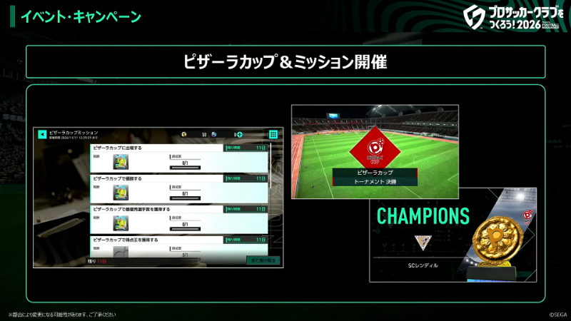
サカつくモードに、通常のリーグ戦とは別の特別カップ戦を組み込む仕組みが登場。その第1弾として期間限定の「ピザーラカップ」が開催されます。
- 特定リーグだけでなく、どの所属リーグでも開催対象。
- 空いている日程を使って特別カップ戦が追加される形式。
- 専用ミッションを達成すると報酬を獲得。
報酬の全容や開催日程の詳細は後日案内とされました。
ダイスイベントはキックターゲットが2マスに
▶ 36:35から動画を見る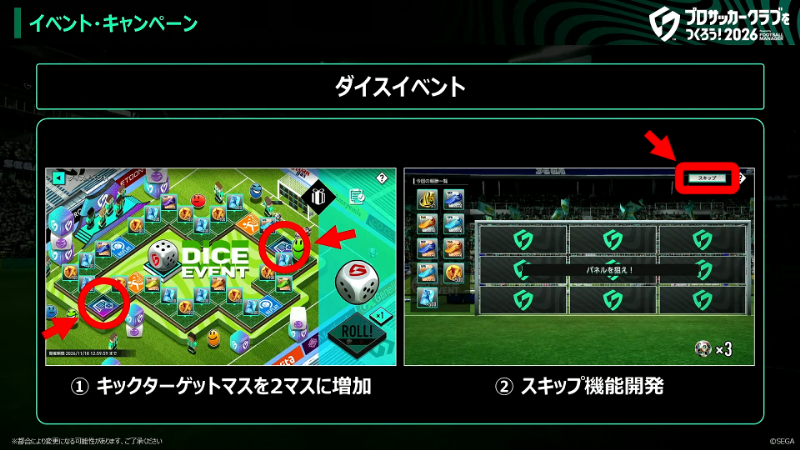
次回のダイスイベントでは、止まりにくさへの対策としてキックターゲットマスが1マスから2マスへ増加。さらに、パネル選択の演出を含めて結果表示まで進められるスキップ機能が開発されています。
放送では1マスあたりの期待値は従来より下がると説明されました。2マスに分散する調整であり、「2マスになるから獲得報酬も2倍」とは言えません。最終的な報酬設計はイベント詳細の公式案内をご確認ください。
このほかサカつくコインイベント、SP選手関連キャンペーン、WPSの報酬増量キャンペーンも発表されました。
関連スライドを開く（2枚）

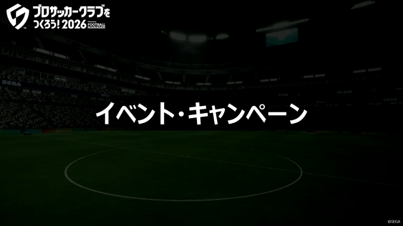

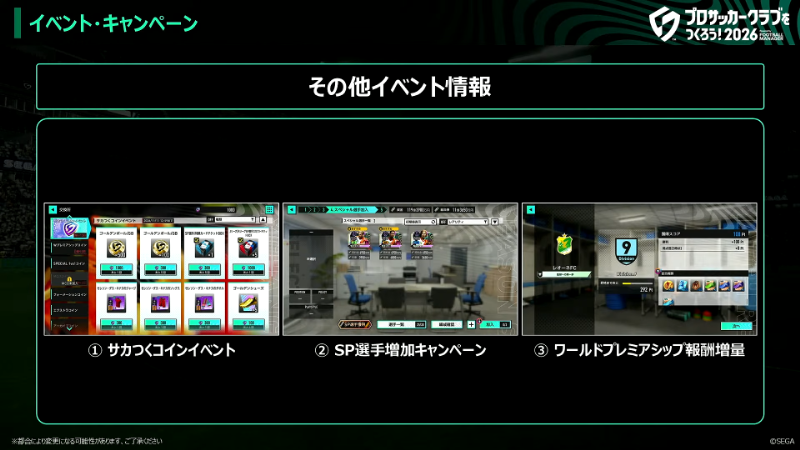
新ガチャ情報｜ポルトガルプレミアムSP・11月4日の特練カード
▶ 40:22から動画を見るポルトガルプレミアムSP選手スカウト
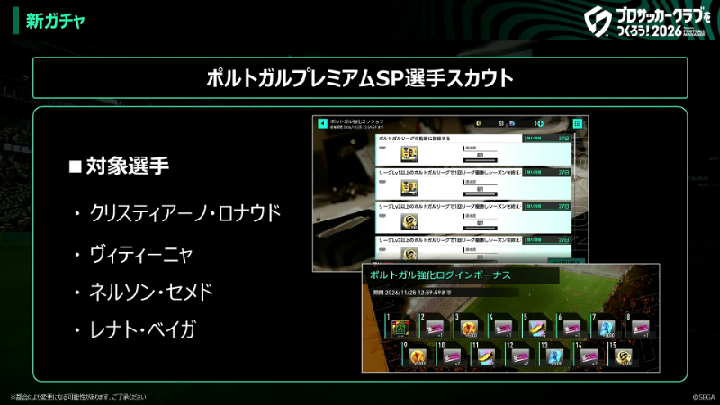
今回のプレミアムSP選手スカウトには、ポルトガルの以下4選手が登場すると発表されました。
あわせて、プレミアムSP選手スカウトチケットを最大10枚獲得できるポルトガル強化ログインボーナスや、サカつくモード内でポルトガルリーグ優勝を目指すミッションが案内されました。ミッション達成報酬には★3のサカつくオリジナル選手も含まれます。
また、今回の限定スカウトメダルについても期間終了後は恒常スカウトのメダルへ変換される運用だと再確認されました。対象選手の詳細性能、ガチャ排出率、引くべきかどうかは正式なガチャ画面を確認した上で判断するのがおすすめです。
スペシャルピックアップ特練カードガチャ｜11月4日開始予定
▶ 42:24から動画を見る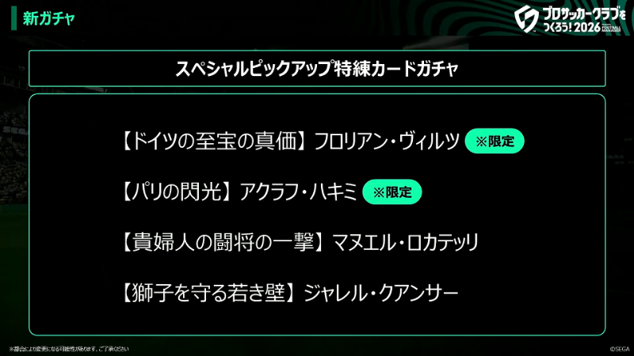
2026年11月4日（水）開始予定の特別練習カードガチャでは、以下の4選手のカードが紹介されました。
| 限定カード | フロリアン・ヴィルツ／アクラフ・ハキミ |
|---|---|
| 恒常カード | マヌエル・ロカテッリ／ジャレル・クアンサー |
カードのスキル・効果の細部については、放送時点では詳細な評価材料が揃っていません。入手優先度はガチャ開催時の性能表示を踏まえて比較するのが確実です。
関連スライドを開く（1枚）

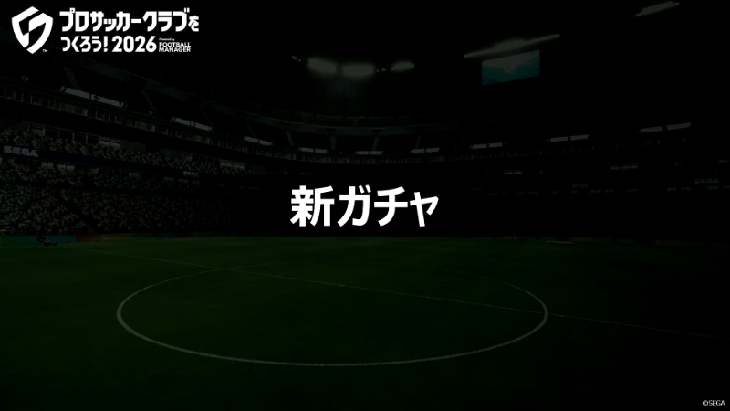
第2回「最強監督決定戦 in JAPAN」｜12月6日に開催
▶ 43:35から動画を見る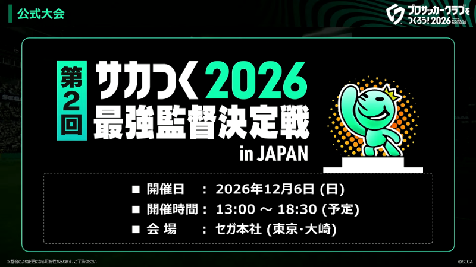
2026年12月6日（日）、東京・大崎のセガ本社で、第2回の公式オフライン大会「サカつく2026 最強監督決定戦 in JAPAN」が開催されます。時間は13:00～18:30予定です。
予選は公式Discord｜本戦には32名が進出
▶ 48:27から動画を見る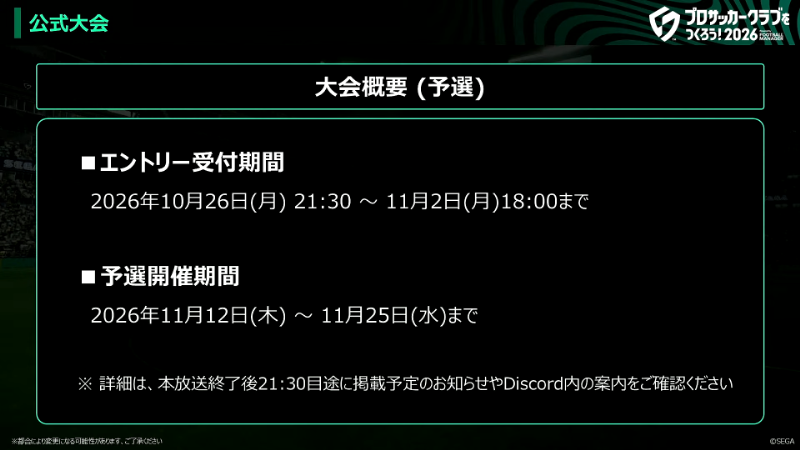
参加条件や申込方法の詳細は、公式Discord内の専用チャンネルで案内されます。参加を希望する場合は、応募期間と公式のお知らせを先に確認してください。
参加特典に「オリジナル選手のエディット権利」
▶ 45:11から動画を見る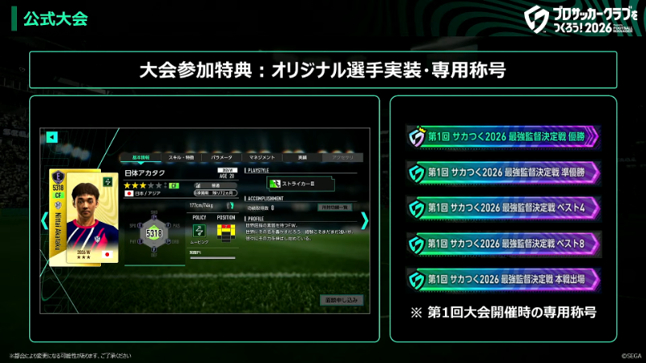
本戦に進出して当日会場へ参加した監督には、自分のオリジナル選手をサカつくモードに登場させる権利と、大会結果に応じた専用称号が用意されます。
今回はさらに、成績に応じてオリジナル選手をエディットできるポイントが与えられる新しい特典が発表されました。
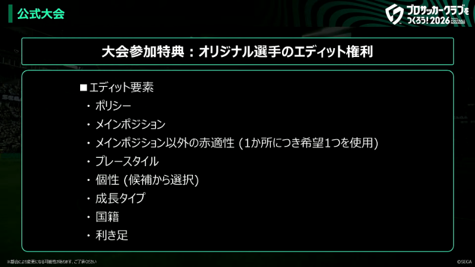
エディット可能な項目として、ポリシー、メインポジション、メイン以外の赤適性、プレースタイル、個性、成長タイプ、国籍、利き足などが紹介されています。順位が高いほど多くのポイントを使える方向です。
放送中の「優勝者100ポイント、出場者10ポイント」という説明はイメージとしての例です。具体的な配点や交換レートが決定したわけではありません。
大会後には、Ver3.0の新情報を発表する「サカつくTV」特別ステージも予定されています。
関連スライドを開く（2枚）

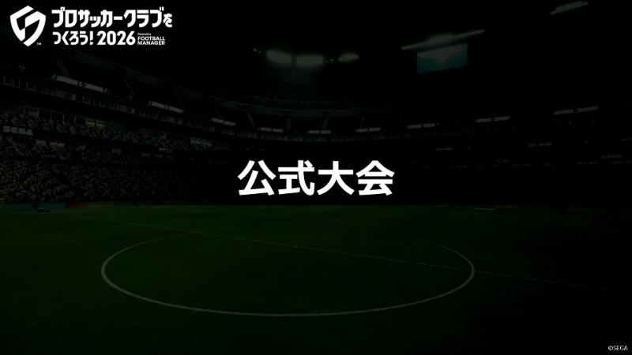

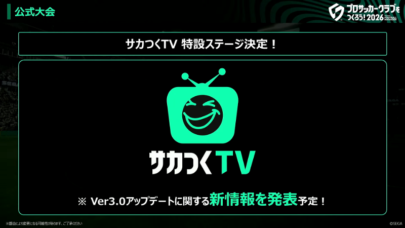
Ver3.0「新サカつくモード」の全容｜アジアの頂点を3年間で目指す
▶ 53:15から動画を見る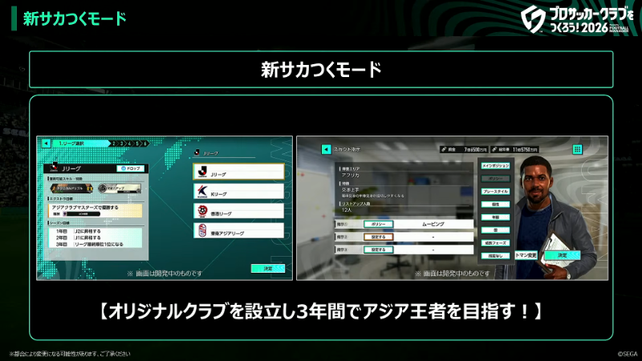
2026年12月予定のVer3.0では、現行とは別に育成特化の「新サカつくモード」が追加されます。開発側が掲げた大きな目的は、従来5年程度かかるSP選手育成を、約3年のプレイサイクルへ短縮することです。
単に年数を減らすのではなく、スカウトや練習の戦略性を高め、「クラブを立て直して成長させる」サカつくらしい楽しさを加える設計だと説明されました。
① アジアのリーグを選び、3年間で目標達成
| スタート | Jリーグなどアジアのリーグを選び、オリジナルクラブを設立。Jリーグの場合はJ3から開始。 |
|---|---|
| 期間 | 3年間で1サイクル。シーズンごとにクリア目標が設定される。 |
| 最終目標 | 各リーグの目標に加え、ゲームオリジナルのアジア大会「アジアクラブマスターズ」優勝を目指す。 |
| 未達成の場合 | 目標達成に失敗するとゲームオーバー。ただし、それまで育成したSP選手は選抜登録される。 |
上位の目標まで達成するほどSP選手の育成期待値が高くなる設計。ゲームオーバーでも育成の成果がすべて無駄になるわけではありません。
② SP選手の登録は「開始時に5名」、ブーストで最大6名
▶ 55:41から動画を見る現行モードのように2年目・3年目にSP選手を追加していく形ではありません。開始時に選んだSP選手を3年間通して育成する仕様です。そのため、どの選手を同時に育てるか、足りないポジションをクラブのスカウトでどう補うかが重要になります。
③ スカウトに個性が追加｜得意地域・交渉・リストアップ人数
▶ 59:25から動画を見る新モードには、名前や見た目を持つ個別のスカウトが登場。アフリカなどの得意地域、年俸交渉が得意といった特徴、リストアップできる人数などに違いがあります。
SP選手以外のクラブ戦力をどう確保するかが重要になるため、スカウトの採用と発掘指示が戦略要素となります。番組では資金繰りや初年度の難易度も調整中だと説明されました。
④ 練習は週単位で設計｜育成の進め方を自分で決める
▶ 1:01:08から動画を見る現行のサカつくモードと大きく異なる点として、週単位でトレーニング内容を組み立てる練習システムを開発中。選手の育成計画を監督やコーチの立場から考える設計を目指しています。
ただし、個々の練習メニューや能力上昇値、育成効率の数式までは未公開。今後公式Xや番組で続報が案内される予定です。
⑤ 現行サカつくモードは残る・セーブデータは別
▶ 1:04:02から動画を見る視聴者からの質問に対して、開発側は現行のサカつくモードを廃止せず、新モードを追加すると明言しました。セーブデータも両モードで別々になります。
選手の更新や恒常ガチャメダルの取り扱いについては、放送時点で方針は固まっているものの最終確認中のため詳細を発表できないと説明されました。失効・持ち越し・変換の条件を推測して断定することはできません。
関連スライドを開く（1枚）

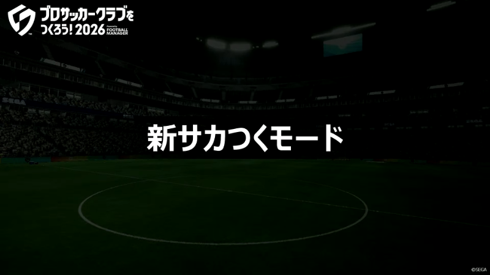
公式ストア情報｜スマホのホーム画面追加と無償RB500
▶ 1:05:29から動画を見る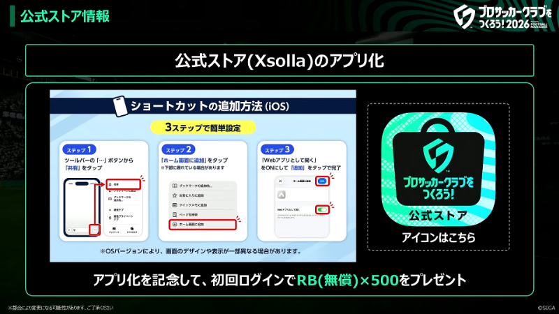
公式ストア（Xsolla）が、専用アイコンを使ったスマートフォンのホーム画面からのアクセスに対応する予定です。iOSだけでなくAndroidも対象と説明されました。
新しいホーム画面アイコンからアクセスすると無償RB500がもらえるキャンペーンを実施予定。既存のショートカット利用者も対象ですが、アイコンを作り直すことが推奨されています。
この機能の公開日は、10月28日と同時になる可能性があるものの放送時点では確定していません。正式な開始告知後に操作してください。
レインボーパス・ブーストパスが公式ストアでも購入可能に
▶ 1:08:50から動画を見る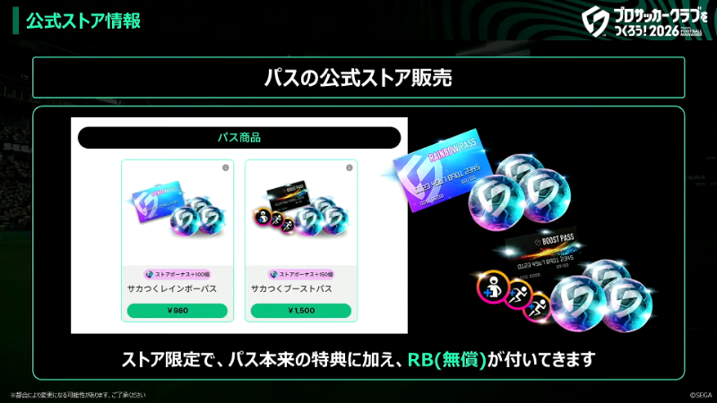
10月28日のメンテナンス終了後、レインボーパスとブーストパスを公式ストアでも購入できる予定です。ゲーム内で購入する場合と同じ価格で、公式ストア経由なら追加の無償RBが付くと説明されました。
すでに各種パスを購入した場合は、購入から30日後に再購入可能と案内されています。公式ストア限定の特典や毎月1回のプレゼントについても、番組で紹介されました。
関連スライドを開く（2枚）

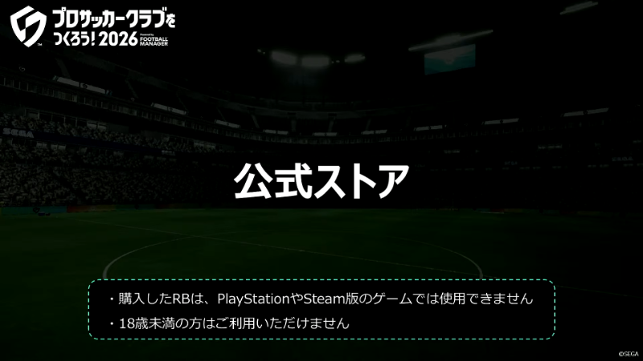

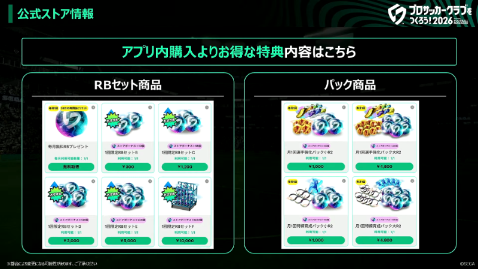
公式ストア・課金商品の利用条件、価格、無償RB付与条件は販売時の表示を確認してください。公式番組スライドにはPlayStation版・Steam版でのRB利用に関する注意書きもあります。
セイカさんのSNSキャンペーン・11月のVer2.5・次回放送
サイン入りユニフォームを抽選で3名にプレゼント
▶ 1:10:23から動画を見る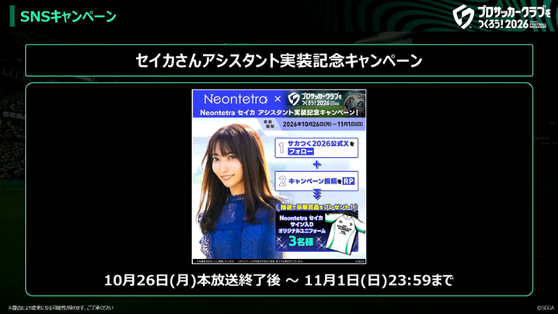
新アシスタント実装を記念し、公式XでNeontetraセイカさんのサイン入りサカつくオリジナルユニフォームが当たるキャンペーンを実施。抽選で3名に当たると発表されました。
スライドで案内された応募期間は10月26日（月）本放送終了後～11月1日（日）23:59。参加方法は公式Xの対象ポストで確認してください。
次回「サカつくTV ハーフタイムSP」は11月中旬予定
▶ 1:12:21から動画を見る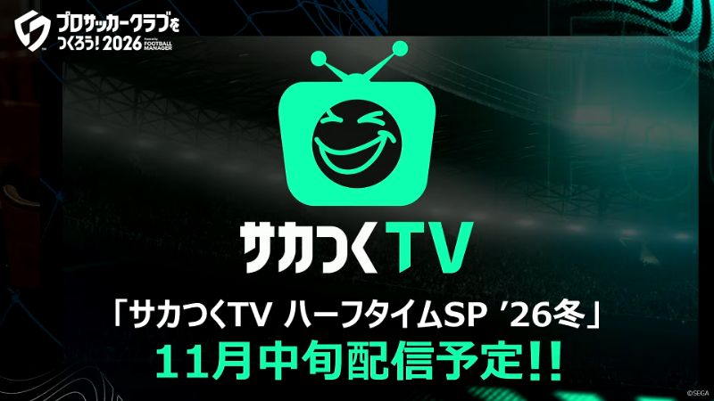
次回公式番組は「サカつくTV ハーフタイムSP ’26冬」として2026年11月中旬に配信予定です。12月のロスターアップデートに向け、関連情報や注意事項が取り上げられる見込みです。
また、従来のロードマップにはなかったVer2.5アップデートを11月に追加する方針も案内されました。主に不具合修正などを予定しており、具体的な実施日・内容は続報待ちです。
関連スライドを開く（1枚）

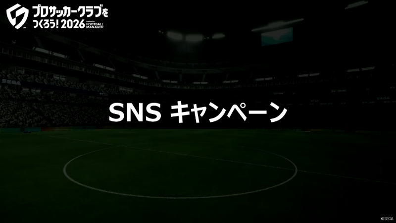
ソニオTVのオレ的注目ポイント｜攻略DBで特に押さえておきたいこと
ここからは公式の発表内容とは分けて、サイト運営・編成検討の視点から注目したい点を整理します。
最も編成への影響が大きいのはこれ。所持SP選手だけでは成立しにくかった金フォメコンも、育成した選手で不足枠を補える可能性が広がります。ただし育成した全選手がそのまま最適解になるとは限らず、スキル・特徴・ポジション適性・総合力を比較して起用したいところです。
決定力やプレイ意識を条件に検索できれば、アクセサリーの候補探しが大幅に短縮。おすすめ装着だけに任せるのではなく、主力選手は狙った効果で厳選する使い分けが実用的だと思います。
新モードは開始時に育てる選手を決める仕様。追加投入できないなら、成長タイプや各選手の育成方針を見て、3年間で伸ばしたい選手を先に絞る準備が重要になりそうです。練習システムの詳細が出てから、具体的なおすすめ育成手順を考えるのがよさそうです。
マスの数が増えても報酬量そのものが倍になるわけではありません。放送で示された「1マスあたりの期待値を分散する」考え方に注意し、実際の開催後に報酬とマスのバランスを確認したいところです。
補足スライド・公式発表の確認方法
記事内の画像はすべて公式番組のスライドです。各項目に表示している画像はタップで拡大できます。本文で扱った発表を一次情報で再確認したい場合は、各見出しの再生時刻リンクから公式YouTube動画へ移動できます。
本記事は2026年10月26日の放送時点の情報をまとめています。「予定」「開発中」「後日発表」の事項は、実施時に変更される場合があります。正式な期間・選手性能・レーティング仕様・報酬条件はゲーム内のお知らせおよび公式SNSをご確認ください。
© サカつく2026攻略DB / ソニオTV